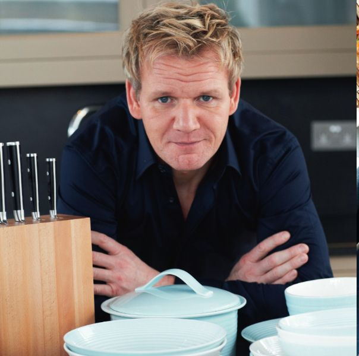

戈登拉姆齊
高登·詹姆士·拉姆齊，OBE（英語：Gordon James Ramsay，1966年11月8日－）[1] ，英國廚師、餐廳老闆和電視名人。
迄今為止，他及他的餐廳總共獲得了16顆米其林之星
高登·拉姆齊以他主持的美食及廚藝節目而聞名，在英國他參與的節目有：
、《美食大冒險》、《高登·拉姆齊：鐵窗之後》；而他在美國參與的節目則有：《美版地獄廚房》、《廚房噩夢》、《廚神當道》、《地獄酒店》。
高登·拉姆齊名下的高登·拉姆齊餐廳在2013年贏得了《精英旅行家》與羅蘭百悅香檳聯合評選的「全球百大餐廳」第33名
高登·拉姆齊在1996年與學校老師、作家、主持Tana Ramsay結婚，共有5個子女。四女Matilda Ramsay也是電視廚師、主持和演員

烤雞腿
番茄蛤蠣義大利麵
蘋果塔
心得